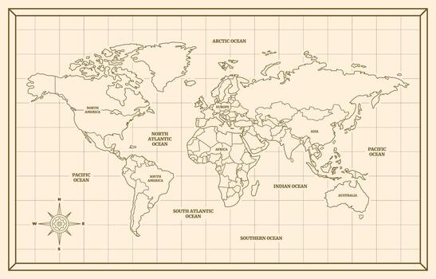
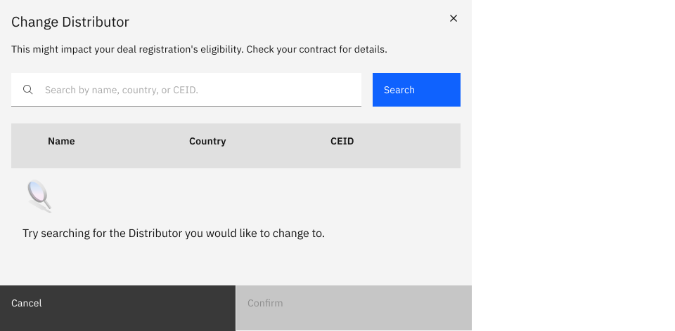
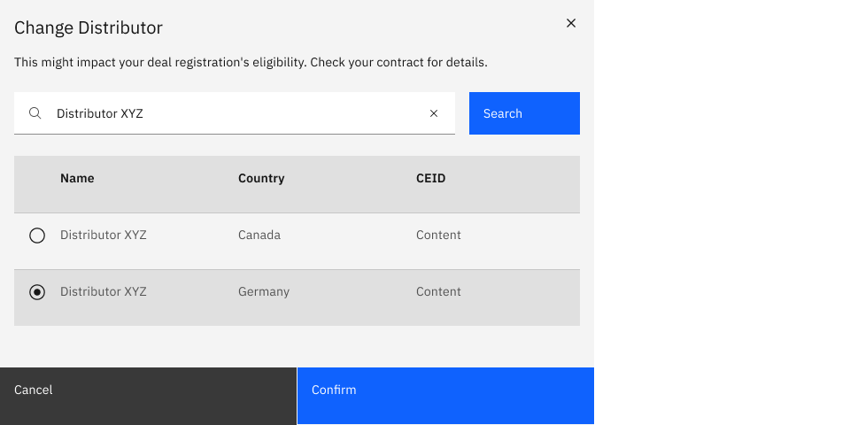

As a reseller, I want to search and add products by name so that I don't have to leave the form to look up SKU codes.
AC · search matches partial strings, returns within 300ms, adds product inline

I led the redesign of IBM's partner deal registration flow on the Partner Plus platform, moving sellers from intent to closed deal 30% faster across 200+ enterprise accounts. I owned research, design, and rollout end-to-end, working closely with engineering, product, and legal teams across IBM.
Due to NDAs, some specific product details, exact metrics, and internal process names have been generalized or omitted.
Context
IBM's partner ecosystem drives a meaningful share of enterprise revenue. But the legacy registration tool, what partners use to claim a sales opportunity, had become a daily friction point. Drop-off was high. NPS feedback skewed negative. Quietly, partners were routing around the system: emailing reps, working in spreadsheets, or skipping registration entirely.
From IBM's side, this looked like missing pipeline visibility. From the partner side, it looked like a bureaucratic gate that didn't pay them back. Both sides were losing.
Research
I led a mixed-method discovery program across three workstreams.
Stakeholder interviews with Engineering, Sales, and Legal to understand technical constraints, regulatory requirements, and the mental models inside IBM.
Contextual inquiry shadowing 12 globally distributed partners as they ran live registrations, surfacing cognitive load and navigation dependencies that weren't visible in any analytics dashboard.
Platform-data analysis of telemetry from existing platform logs. The "Add Products" section was the sharpest fall-off point, with 49% drop-off at that step alone.
The synthesis became a tight problem statement: the form didn't match the shape of the work. After a prioritization matrix with the Product Owner, we agreed to tackle the high-impact "Add Products" flow first.

Contextual inquiry footprint · 12 partners shadowed across 5 regions · hover any dot for details
UX process
Research told us the form didn't match the shape of the work. Process is how we translated that finding into a Carbon-grade flow without skipping the steps that make a redesign defensible. Each artifact below fed the next.
With raw interview notes from 12 partners, I mapped the end-to-end registration journey across five stages: discover, prepare, fill, submit, await approval. The dip was sharpest at fill → submit, where partners pasted from spreadsheets, hit validation errors, and lost the data they'd just typed.
Mocked journey map · this is a representative version, the original is under NDA · the dip at fill → submit anchored the redesign brief
Journey mapping showed where partners hurt. User stories translated that pain into testable, scope-able units of work. I wrote 32 stories across the three partner archetypes, each tagged with priority and acceptance criteria.
As a reseller, I want to search and add products by name so that I don't have to leave the form to look up SKU codes.
AC · search matches partial strings, returns within 300ms, adds product inline
As an ISV, I want to register multi-product co-sell deals in one flow so that I'm not creating separate registrations per SKU.
AC · single submission supports up to 25 products, each with its own pricing
As a system integrator, I want to save partial registrations so that I can pause when I'm waiting on client info.
AC · draft auto-saves every 30s, retrievable for 30 days
As a reseller, I want to see inline validation errors so that I don't lose data I've typed when a field is wrong.
AC · errors shown on blur, focus retains entered value, helper text describes fix
As an ISV, I want account data pre-filled from CRM so that I only enter what's deal-specific.
AC · CRM lookup auto-fills 8 fields, partner can override any with one click
Stories covering renewal flows, expansion deals, multi-region compliance, validation errors, partial submissions, and approval handoff. Full backlog scoped with Engineering during sprint planning.
Sample user stories · representative format, originals under NDA
32 stories was a backlog, not a release. I ran a half-day prioritization workshop with the Product Owner, Engineering lead, and Legal counsel, with impact on the X-axis, effort on the Y-axis. Three features came out clearly P0. Everything else either deferred or got rolled into Phase 2.
Workshop attendees
Product Owner
Engineering Lead
Legal Counsel
Me · Design
P0 · ship first
Embedded search
Replaces manual product code lookup · killed the 49% drop-off
Inline validation
Carbon form components flag errors before submit
Pre-filled smart defaults
CRM data auto-populates account fields
P1 · phase 2
Draft auto-save
Partial registrations retrievable for 30 days
Multi-product co-sell
Single submission supports up to 25 products
P2 · backlog
Compliance simplification
Slimmed Q-bank, regional conditional questions
Approval status surfacing
In-product notification when legal signs off
Half-day impact × effort workshop · 3 P0 features anchored the first release
Partners weren't all running the same path. A reseller registering a transactional deal looks nothing like an ISV co-selling a multi-product opportunity. I mapped 11 distinct flows across 3 partner archetypes (Reseller, ISV, System Integrator) and 3 deal scenarios (new business, renewal, expansion). Boxes below are Carbon-styled placeholders; production diagrams are under NDA.
Composite flow · 11 paths simplified to 3 archetypes × 3 scenarios · production diagrams under NDA
Two rounds of lo-fi testing with 6 partners before any high-fidelity work. Greybox sketches were deliberately ugly so feedback would focus on structure and sequence, not color or polish. The embedded search pattern for "Add Products" emerged from this round. Partners kept reaching for it in the prototype before it actually existed.
01 · Deal context
02 · Products · embedded search
03 · Pricing
04 · Review & submit
Lo-fi greybox wireframes · web-app screens, tested with 6 partners across 2 rounds
Once the lo-fi structure tested clean, I rebuilt the full flow in Carbon, and not just the happy path. I designed every screen and state across all 11 user flows: empty, filled, error, validation, loading, success, edge cases, and partial saves. By the time engineering opened the file, every interaction had a redline, every state had a wireframe, and every edge case had a spec.
Hi-fi Carbon prototype · production file under IBM NDA
The solution
The redesign reorganized the registration experience around the Carbon Design System, with three intertwined moves.
Embedded Search. Replaced the manual product code lookup that was driving the 49% drop-off. Wireframes were validated with partners before we touched high-fi.
Real-time validation. High-fidelity Carbon prototypes demonstrated inline error feedback, preventing bad data from entering the pipeline at all. The downstream effect was less Sales rework and fewer duplicate records.
Compliance simplification. A round of empathy mapping with the engineering squad surfaced how many compliance fields were performative. After a Legal sync, we negotiated a meaningful reduction in mandatory questions, without losing regulatory coverage.
Carbon contribution
While shipping the new flow, I identified an interaction pattern the standard Carbon library didn't cover: a search-in-modal for finding an existing entity (a distributor, customer, or partner) from a large indexed dataset, with a fall-through to "create new" when nothing matches. Rather than build it as a one-off for Deal Registration, I designed and documented it as a new global variant, alongside Carbon's existing transactional, passive, and danger modals.
New variant
A modal pattern that opens with a search field, returns a filtered table of indexed results, and provides single-select with a "create new" fall-through. Built for high-volume entity selection where a dropdown or combo box can't carry the metadata partners need to disambiguate.

01 · Empty
Modal opens with an inactive results table and a prompt to search. Confirm disabled until a selection is made.

02 · Filled
Query returns a filtered, single-select results table. Confirm activates once a row is selected. Clear button resets the field without closing the modal.
03 · Error
If the user submits the search with an empty field, an inline validation message appears below the input ("You must enter a search value"). Field gets a red border, focus returns to the input, and the results table remains in empty state.
Use it for
Don't use it for
Six structural parts, all built from existing Carbon primitives. The variant introduced no new tokens or components. It composed elements that were already in the system into a pattern that hadn't been documented yet.
Title & context. Modal title plus a single-line description of consequence. The Change Distributor variant flags eligibility impact directly under the title.
Search field. Primary input with placeholder hinting at all searchable fields (name, country, CEID). Clear icon on the right when populated.
Search action. Primary button submits the query. Disabled when input is empty in the Change Distributor variant; auto-search on debounce in lower-stakes variants.
Results table. Standard Carbon data table with a leading radio column for single-select. Columns are configurable per implementation.
Empty / fall-through state. Illustration plus prompt before search, and a "create new" link after a zero-result search.
Footer actions. Cancel and Confirm. Confirm disabled until a row is selected. Both buttons full-width per Carbon's transactional modal footer spec.
The variant passed Carbon's WCAG 2.1 AA review: focus traps to the modal on open, returns to the trigger element on close, escape cancels, enter submits the search. Screen reader announcements tier through three priorities: results-count, selected-row, submit-confirmation.
The component shipped with usage guidelines, do's-and-don'ts, accessibility specs, and code examples in the Carbon documentation. The variant still ships in production today, used by other IBM partner-facing products beyond Partner Plus.
Validation
Lo-fi got us to "the structure works." Hi-fi got us to "the interaction works." I built a clickable Carbon prototype covering the four critical screens (entry, products, pricing, and submit) and ran 8 moderated usability sessions across the three partner archetypes. Two rounds: first round to surface friction, second round to confirm the friction was gone. Three issues were caught and fixed before a single line of production code shipped.
Moderated · across 3 archetypes
Discover · confirm
Caught pre-engineering
Screen reader & keyboard pass
What we caught
Search ranking surfaced obsolete SKUs first. Reweighted to favor active catalog entries.
Conditional fields appeared without warning. Added a one-line preface so partners weren't startled mid-flow.
Submit confirmation was too quiet. Upgraded from inline toast to a confirmation page with next-steps and a record ID.
Impact
The redesign rolled out from a 12-account pilot to 200+ enterprise accounts over Q3. The numbers told the story.
30%
faster cycle time
From first registration to closed-won, measured across 200+ accounts.
65%
less form abandonment
At the "Add Products" section, the original sharpest pain point.
75%
fewer duplicate records
Real-time validation prevented bad data from entering downstream Sales workflows.
40%
higher satisfaction
User satisfaction scores measured pre and post launch.
Reflection
Treating Deal Registration as a product rather than just a form transformed a critical business process. Rigorous user research paired with cross-functional leadership didn't just make the experience smoother, it directly impacted the bottom line.
The most important lesson: in enterprise UX, the answer to a UX problem often lives outside the UI. The Legal sync. The CRM integration. The component contributed back to Carbon. None of those were screens, but every one of them moved the metric.